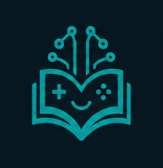
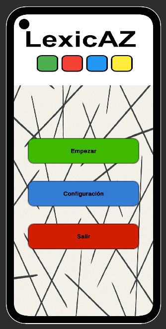
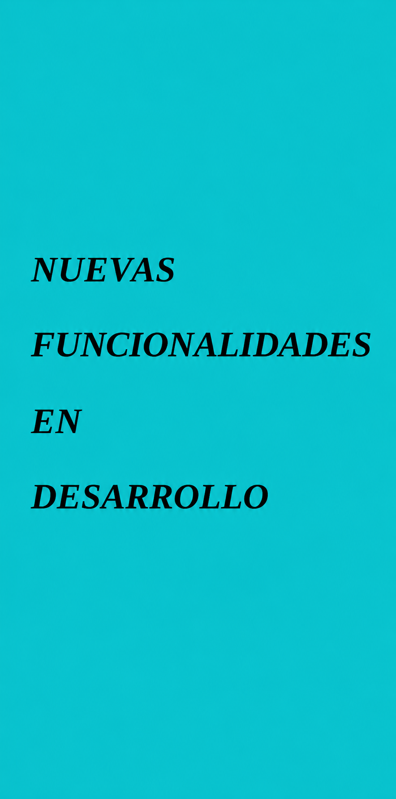

Educational app development
I design and develop learning-oriented applications, combining visual interaction, application logic and a simple user experience.
Cross-platform development · Digital education · Applied AI
I am Víctor Arroyo, a cross-platform app developer interested in creating educational software, interactive interfaces and digital tools that make learning clearer, more practical and more accessible.
I am interested in combining programming, user experience design, application logic, databases and artificial intelligence to build useful projects. Through apps such as LexicAZ and MorS, I develop practical solutions while continuing to strengthen my skills in Unity, C#, SQL, mobile development and web technologies.

Educational apps · Unity · C# · Applied AI
I am Víctor Arroyo, a cross-platform app developer trained in Multiplatform Application Development. I am interested in creating useful, accessible software with a clear user experience, especially in projects related to learning, education and artificial intelligence.
My practical experience is based on my own projects, such as LexicAZ, an app for learning multilingual vocabulary, and MorS, an interactive application for learning Morse code through a visual node and press-based system.
I am currently looking for developer opportunities where I can keep learning, contribute to real projects and bring a practical, curious mindset focused on continuous improvement.
My goal is to grow as a developer by creating solutions with real value: clear, interactive applications designed to make technology support learning.
I design and develop learning-oriented applications, combining visual interaction, application logic and a simple user experience.
I turn ideas into prototypes that make it possible to test mechanics, validate features and transform concepts into real digital products.
I am interested in applying artificial intelligence and interactive design to create more personalized, useful tools adapted to new ways of learning.
My applications are built around a clear idea: turning learning into an engaging, visual and accessible experience. Through projects such as LexicAZ and MorS, I aim to create tools that help people learn languages, concepts and skills in a more intuitive and practical way.
Tap the logo to view screenshots
Educational app
Mobile application for learning vocabulary in several languages through word comparison, progressive practice and mini-games.

1 / 7
LexicAZ home screen
Tap the logo to view screenshots
Interactive app
Application for learning Morse code through a visual node tree, progressive highlighting and short or long presses.

1 / 5
MorS main screen
Portfolio in progress
Space reserved for new applications, prototypes and experiments related to technology, learning, science and applied artificial intelligence.
I work with and continue learning technologies focused on application development, interactive prototypes, databases and web publishing.
Languages are part of how I understand technology and learning. They help me communicate in diverse environments and strengthen my interest in creating educational, accessible and multilingual applications.
Native spoken and written communication.
Professional and technical communication.
Fluent communication.
Fluent communication.
General communication.
Basic knowledge in progress.
I am open to professional opportunities, internships, collaborations and projects related to software development, educational applications, technology and applied artificial intelligence.